Sports Bridge International Foundation · Lagos
From the street to the start line building Africa's next generation through sport.
We connect young people, communities and partners through a single pathway that turns play into purpose: from gaming and grassroots fields to training, education and lifelong opportunity.
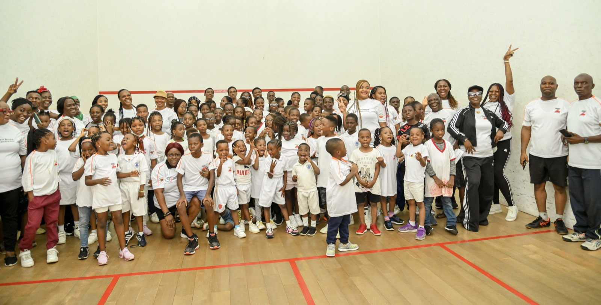
Who we are
A foundation built on a simple belief: every child deserves a field, a coach, and a future.
The Sports Bridge International Foundation is the social impact arm of Sports Bridge International. Sport brings strangers together as teammates — and we exist to remove the barriers that keep people on the sidelines, whether those barriers are economic, geographic, cultural, or gender-based. For the underserved, the overlooked, and the newly arrived, that might mean a missing pair of boots, a school without a pitch, a talent no one was there to spot, or simply not knowing where to begin.
We meet young people where they already are — on the phone, in the gaming café, on the dusty estate pitch — and we walk with them all the way to training academies, classrooms and careers.
Participation
Open, low-barrier entry points so no one is left on the sidelines.
Development
Coaching, sports science, mentorship and scholarships.
Inclusion
Programmes designed for girls, migrants and underserved communities.
Opportunity
Pathways into education, employment and the wider sports economy.
The pathway
The Journey
-
Connect
We reach young people through gaming tournaments, e-sports and digital communities — the spaces they already love.
I'll replace this with a shot from one of our own gaming / e-sports sessions soon.
-
Play
Digital players step onto real pitches through open tournaments, taster days and school leagues across Lagos.
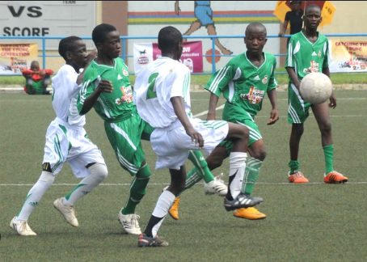
I'll replace this with our kids on a real Lagos pitch soon.
-
Grow
Promising talent enters structured academies with coaching, sports science, mentorship and scholarship support.

I'll replace this with one of our real academy training sessions soon.
-
Rise
Graduates move into education, employment and the sports economy — and return to coach the next generation.
I'll replace this with a graduate of ours coaching or at work in sport soon.


What we do
Six programmes, one pathway.


Our impact
The score so far.
Get involved
There's a place for you on this team
Partner With Us
- Collaborate across events, retail and community programmes
- Reach a purpose-driven audience
- Share in verified social-impact reporting
Volunteer & Coach
- Coach, mentor or run a programme
- Lend professional skills pro bono
- Join match-day and event teams
Enrol a Child
- Free academies across Lagos
- Safe, certified, inclusive spaces
- Pathways from play to scholarship
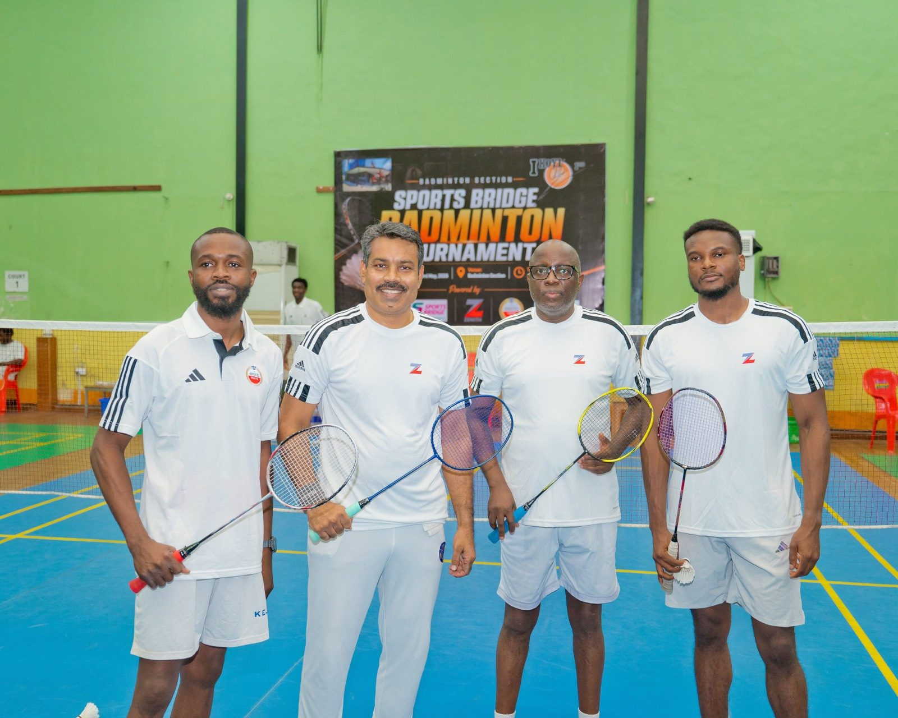
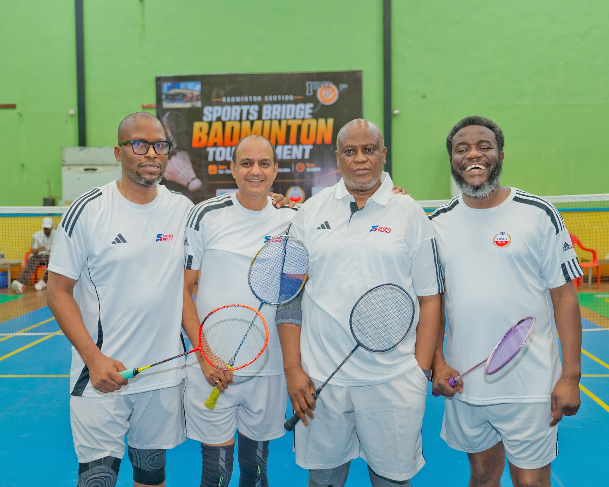
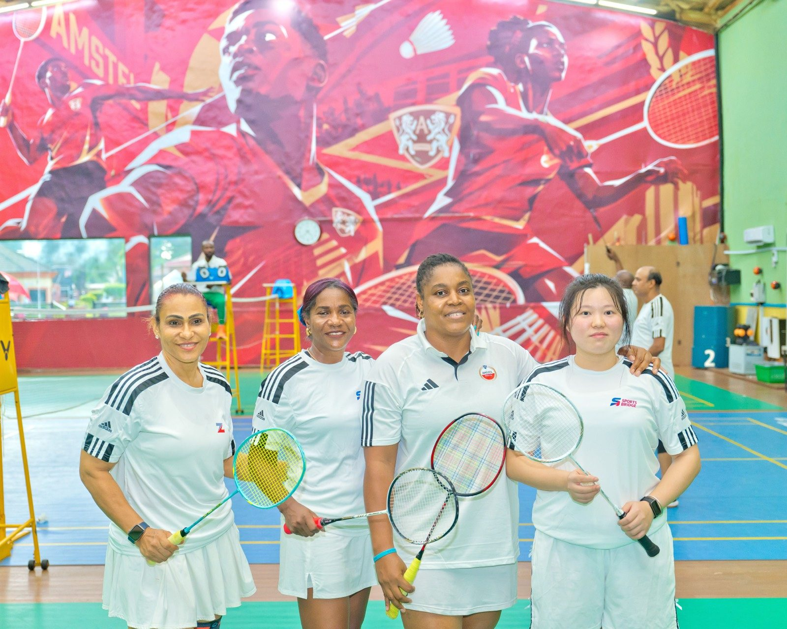
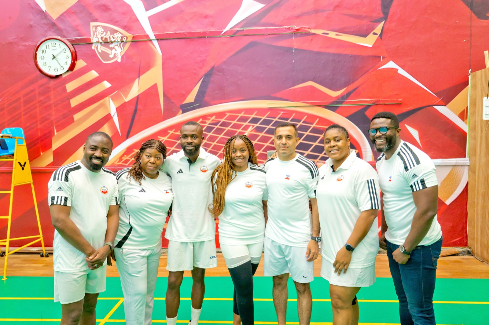
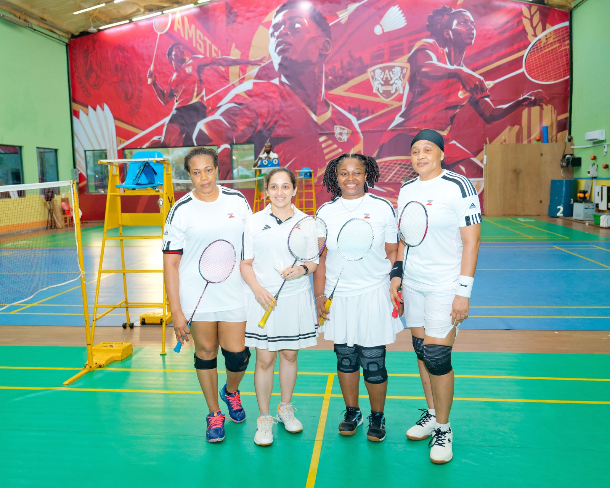
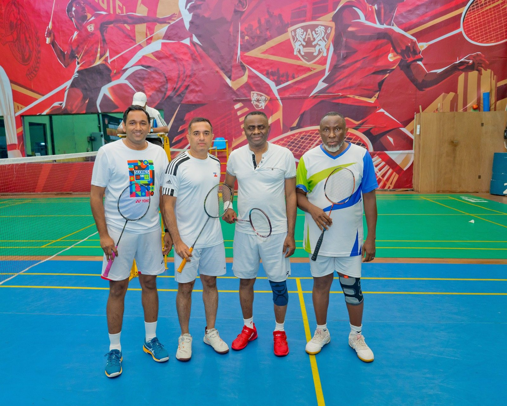
Sport without borders
Shared play into shared community.
Sport is one of the most powerful tools for integration — helping migrants build relationships, learn the culture, and feel a genuine sense of belonging. By bringing migrants and host communities together on the field and court, we turn shared play into shared community.
“What we launched in Lagos is more than a sports facility; it is a scalable platform that merges sport, enterprise, and social impact in a way that reflects the future of community development.” Rerhe Idonije, Managing Partner, Sports Bridge
A recent tournament brought together players of many nationalities and professional backgrounds — underscoring sport's role as a platform for networking, wellness, and international exchange.
- Tournaments designed specifically for migrant communities
- Workshops for mothers and female migrants
- Multi-sport pathways — golf, badminton, swimming and more — as tools for finding friends, learning the culture, and integrating into society
- Support that goes beyond the social: helping people discover new ambitions, find work, and support their mental health
Partners & endorsements
The institutions who believe in what we’re building.
Endorsed by
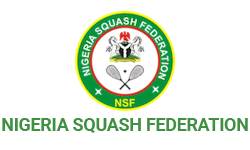
Nigerian Squash FederationPrivate-sector partners

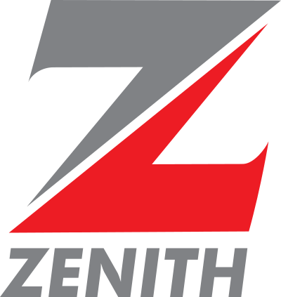
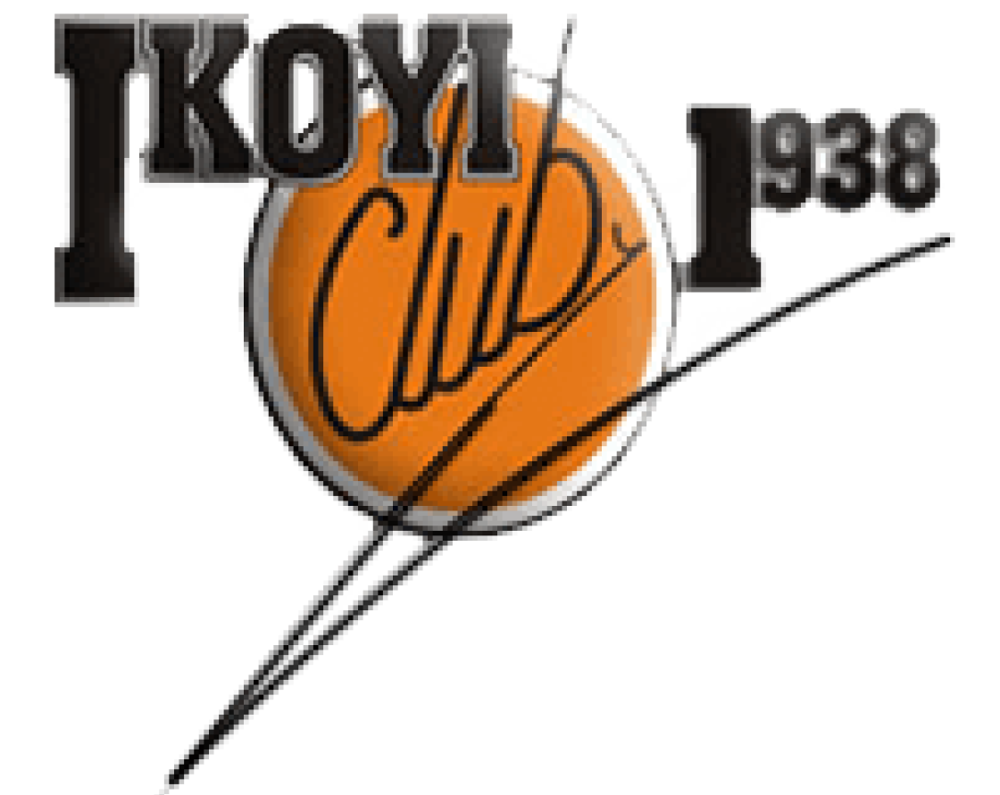
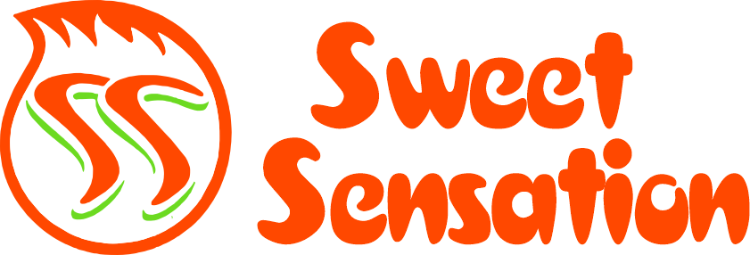
Communities reached
- Ikoyi Club 1938
- More to come